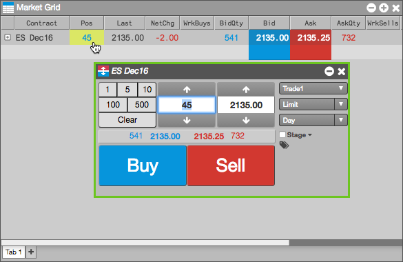
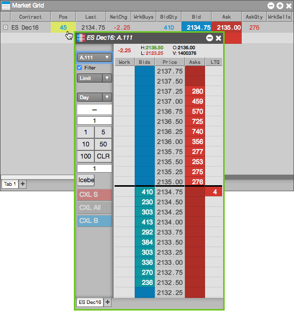
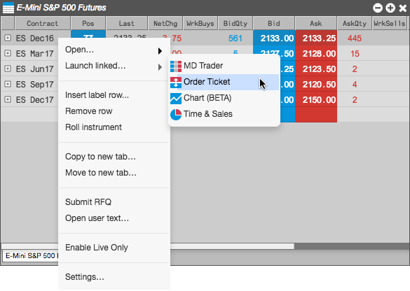
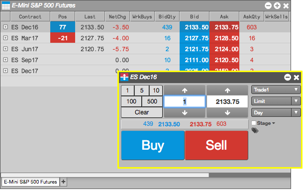
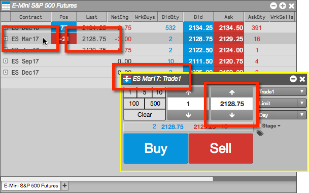
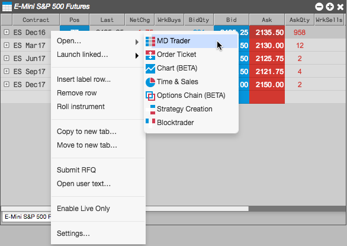
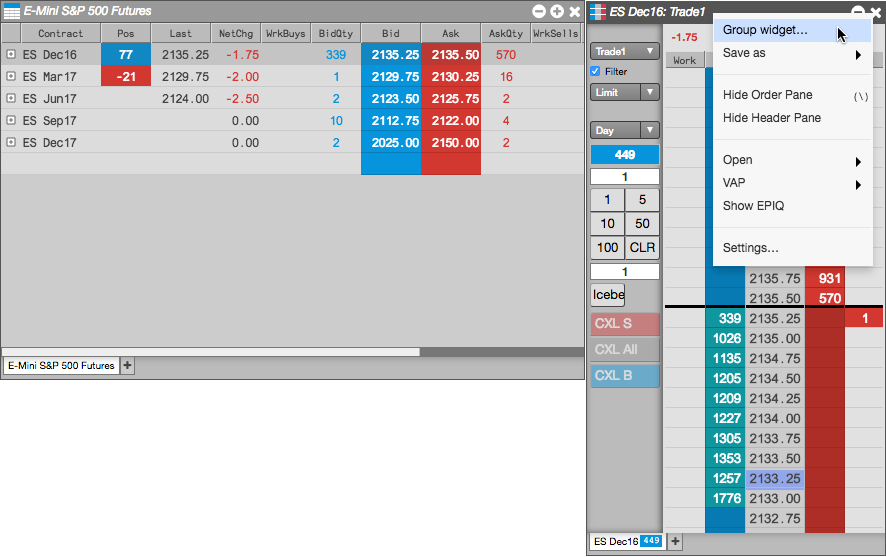
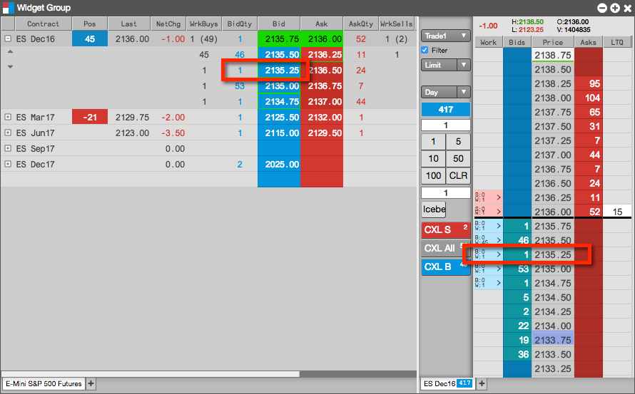

You can submit orders in the Market Grid by opening a floating order entry window (e.g., MD Trader®) or linked widget (e.g., Order Ticket). You can also trade from the Market Grid by grouping it with an order entry widget and creating a widget group.
To trade with a floating order entry order ticket:
Click in one of the following column values in the Market Grid to open MD Trader:

To trade with a floating order entry MD Trader:
Click one of the following column values in the Market Grid:

To trade with a linked widget:
Right-click on the instrument to select Launch linked... and click on a widget (e.g., Order Ticket).

The widget opens populated with market data for the selected instrument (e.g., ES Dec16). The border of the widget is yellow indicating it is linked to the Market Grid.

Select another instrument in the Market Grid (e.g., ES Mar17).
The linked widget is seeded automatically with the new instrument.

To trade with a grouped widget:
Right-click on the instrument to select Open and click on a widget (e.g., MD Trader®)

Right-click in the opened widget title bar to select Group widget... and create a widget group.

Enter an order in the docked (grouped) MD Trader widget.
The order appears in the Market Grid as well as in MD Trader. As you select an instrument in the Market Grid, it appears in the grouped MD Trader widget.
